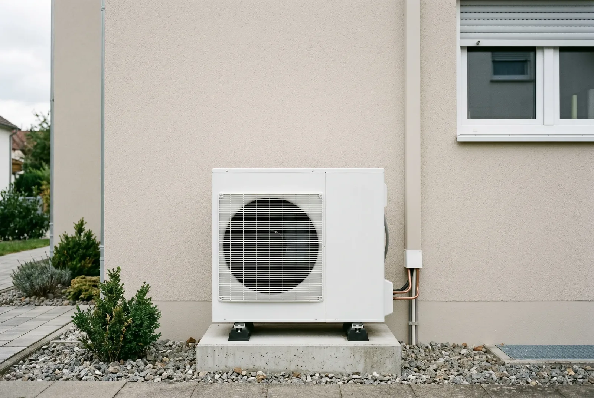
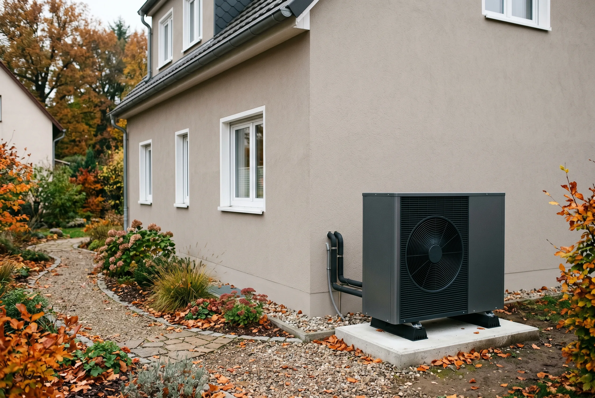

Inhaltsverzeichnis
- Warum der Förderantrag im Altbau oft schiefläuft
- Was sich zum 21. Juli 2026 geändert hat
- Wird die Wärmepumpe überhaupt noch gefördert — und wie lange?
- Was Sie für die Förderung brauchen
- Schritt 1 — Alle Boni berechnen
- Schritt 2 — Fachunternehmen und EEE einbinden
- Schritt 3 — Den KfW-458-Antrag stellen
- Schritt 4 — Einbauen und Förderung abrufen
- Schritt 5 — Förderung maximieren
- Typische Fehler vermeiden
- Fazit
Das Wichtigste in Kürze
- KfW 458: Über das Programm „Heizungsförderung für Privatpersonen" sichern Sie sich im Altbau für Förderanträge ab dem 21. Juli 2026 30 bis 80 Prozent Zuschuss, maximal 22.400 Euro pro Wohneinheit bei 28.000 Euro Kostendeckel.
- Reihenfolge: Erst Antrag, dann Einbau. Wer die Anlage vor der KfW-Zusage bestellt oder einbaut, löst einen förderschädlichen Maßnahmenbeginn aus und verliert den Zuschuss.
- Bausteine kombinieren: 30 Prozent Grundförderung, 16 Prozent Klimageschwindigkeitsbonus und bis zu 40 Prozent Einkommensbonus (neu: dreistufig, plus Familienzuschlag) ergäben 86 Prozent – die KfW deckelt jedoch bei 80 Prozent. Effizienzbonus und Emissionsminderungszuschlag sind entfallen.
- Übergangsregel: In der Umstellungsphase vom 9. bis 20. Juli 2026 werden keine neuen BzA ausgestellt. Nur wer eine gültige BzA besitzt, kann bis zum 20. Juli 2026 noch zu Alt-Konditionen beantragen; ab dem 21. Juli 2026 gelten ausschließlich die neuen Konditionen. Bestehende Zusagen bleiben gültig.
- BzA zuerst: Lassen Sie sich eine Bestätigung zum Antrag (BzA) ausstellen und schließen Sie einen Liefervertrag unter aufschiebender Bedingung, bevor Sie den Antrag im Portal „Meine KfW" absenden.
- Fristen: Die Antragsprüfung dauert zwei bis sechs Wochen, nach der Zusage haben Sie 36 Monate Zeit zur Umsetzung – der gesamte Ablauf bis zur Auszahlung dauert meist drei bis sechs Monate.
Stand der Angaben (12. Juli 2026): Bundestag und Bundesrat haben am 10. Juli 2026 das neue Gebäudemodernisierungsgesetz (GModG) beschlossen, und die reformierten KfW-Förderbedingungen gelten laut BMWE und KfW für neue Anträge ab dem 21. Juli 2026. Das Gesetz ist jedoch noch nicht verkündet und die geänderte Förderrichtlinie noch nicht im Bundesanzeiger veröffentlicht – alle Zahlen geben den aktuellen Stand des Wissens wieder, ohne Gewähr. Die Förderung steht außerdem unter dem Vorbehalt verfügbarer Bundesmittel; ein Rechtsanspruch besteht nicht. Welche Konditionen für Ihr Vorhaben konkret gelten, prüfen wir gern tagesaktuell für Sie.
Warum der Förderantrag im Altbau oft schiefläuft
Wer im Bestandsgebäude eine alte Öl- oder Gasheizung gegen eine Wärmepumpe tauscht, kann sich aktuell den höchsten Zuschuss sichern, den der Staat für die Heizung vergibt. Trotzdem landen viele Anträge in der Ablehnung – oder Eigentümer schöpfen die mögliche Quote nicht aus. Der häufigste Grund ist banal: Die Reihenfolge stimmt nicht. Wer den Handwerker zu früh beauftragt oder den Antrag erst nach der Bestellung stellt, verliert den Anspruch auf die komplette Summe.
Beim Tausch einer alten Heizung gegen eine moderne Wärmepumpe geht es schnell um fünfstellige Beträge. Eine falsch formulierte Vertragsklausel oder ein verfrühter Auftrag kann den Unterschied zwischen vollem Zuschuss und null Euro ausmachen. Genau weil die richtige Reihenfolge so fehleranfällig ist, übernehmen wir die Antragstellung bei EffiNova gern komplett für Sie – von der Förderfähigkeits-Prüfung Ihres Angebots über die Bestätigung zum Antrag bis zur Einreichung im KfW-Portal, damit keine Förderung an einem Formfehler scheitert. Wer den Ablauf lieber selbst steuern möchte, dem hilft dieser Leitfaden, ihn von vorne bis hinten sauber zu verstehen.
Dieser Leitfaden führt Sie Schritt für Schritt durch das KfW-Programm 458 für Bestandsgebäude. Am Ende wissen Sie genau, wie hoch Ihre Förderung ausfällt, welche Unterlagen Sie wann brauchen und in welcher Reihenfolge Sie vorgehen müssen, damit nichts schiefgeht.
Gut zu wissen: Die goldene Regel der Heizungsförderung lautet: erst den Antrag, dann der Einbau. Beginnen Sie das Vorhaben vor der KfW-Zusage, gilt es als förderschädlicher Maßnahmenbeginn – und der Zuschuss ist verloren.
Was sich zum 21. Juli 2026 geändert hat
Am 10. Juli 2026 haben Bundestag und Bundesrat das neue Gebäudemodernisierungsgesetz (GModG) beschlossen – parallel dazu haben BMWE und KfW die Heizungsförderung reformiert. Für neue KfW-458-Anträge gelten ab dem 21. Juli 2026 geänderte Konditionen: Der Klimageschwindigkeitsbonus sinkt von 20 auf 16 Prozent, der Einkommensbonus wird dreistufig und reicht jetzt bis 40 Prozent, neu hinzu kommt ein Familienzuschlag. Der Effizienzbonus von 5 Prozent für natürliche Kältemittel und der Emissionsminderungszuschlag sind dagegen ersatzlos entfallen. Der Deckel der förderfähigen Kosten sinkt von 30.000 auf 28.000 Euro, der maximale Fördersatz steigt dafür von 70 auf 80 Prozent.
Die Übergangsregel für laufende Vorhaben
Entscheidend für alle, die gerade mitten in der Planung stecken: Vom 9. bis 20. Juli 2026 läuft eine Umstellungsphase, in der keine neuen Bestätigungen zum Antrag (BzA) ausgestellt werden. Wer bereits eine gültige BzA besitzt, kann seinen Antrag noch bis einschließlich 20. Juli 2026 zu den alten Konditionen stellen – also mit 30.000 Euro Kostendeckel, 20 Prozent Klimageschwindigkeitsbonus, Effizienzbonus und maximal 70 Prozent Fördersatz. Ab dem 21. Juli 2026 werden neue BzA ausgestellt und Anträge ausschließlich zu den neuen Konditionen angenommen. Bereits erteilte Förderzusagen bleiben unverändert gültig.
Gut zu wissen: Ob die alten oder die neuen Konditionen für Sie günstiger sind, hängt vom Einzelfall ab – Haushalte mit niedrigem Einkommen profitieren von den neuen Sätzen, wer nur Grund- und Klimageschwindigkeitsbonus erreicht, fuhr mit den alten besser. Wer eine gültige BzA hat, sollte jetzt schnell rechnen und gegebenenfalls bis zum 20. Juli 2026 beantragen.
Ausblick: Wertschöpfungsbonus ab 2027 geplant
Für das erste Quartal 2027 ist zusätzlich ein Wertschöpfungsbonus geplant: Die Grundförderung soll für außerhalb der EU gefertigte Wärmepumpen auf 15 Prozent sinken, während in der EU gefertigte Geräte 15 Prozent Bonus erhalten sollen. Beschlossen ist das noch nicht – wer den Einbau erst für 2027 plant, sollte die Herkunft des Geräts aber schon jetzt mitdenken.
Wird die Wärmepumpe überhaupt noch gefördert — und wie lange?
Die kurze Antwort: Ja, die Wärmepumpen-Förderung läuft weiter. Die Reform vom Juli 2026 schafft die Förderung nicht ab – die Koalition hat die Fortführung der Heizungsförderung zugesagt und mit den neuen KfW-458-Konditionen umgesetzt. Wer jetzt plant, bekommt weiterhin einen substanziellen Zuschuss. Die ehrliche Ergänzung lautet aber: Die Förderung ist jetzt degressiv angelegt. Ab dem 1. Februar 2027 sinkt der Klimageschwindigkeitsbonus halbjährlich um 4 Prozentpunkte, und der Deckel der förderfähigen Kosten sinkt halbjährlich um 750 Euro. Je später der Antrag, desto niedriger fällt der Zuschuss aus.
Der Degressions-Fahrplan im Überblick
| Zeitraum (Antragstellung) | Standard-Fördersatz Selbstnutzer (Grund- + Klimabonus) | Deckel 1. Wohneinheit | Max. Zuschuss Standard |
|---|---|---|---|
| bis 31.01.2027 | 46 % | 28.000 € | 12.880 € |
| ab 01.02.2027 | 42 % | 27.250 € | 11.445 € |
| ab 01.08.2027 | 38 % | 26.500 € | 10.070 € |
Einkommensbonus und Familienzuschlag kommen für berechtigte Selbstnutzer jeweils zusätzlich obendrauf – die Tabelle zeigt den Standardfall aus Grundförderung und Klimageschwindigkeitsbonus. Der Fahrplan gibt die aktuellen Beschlüsse von BMWE und KfW wieder; es gilt der Hinweis zum Stand der Angaben am Anfang dieses Artikels.
Und wenn der Fördertopf leer ist?
Diese Sorge ist nicht aus der Luft gegriffen, deshalb beantworten wir sie ehrlich: Einen Rechtsanspruch auf die Förderung gibt es nicht – die KfW vergibt die Zuschüsse unter dem Vorbehalt verfügbarer Bundesmittel. Ein konkretes Enddatum oder einen angekündigten Förderstopp gibt es derzeit nicht, Panik ist also fehl am Platz. Aber neben der Degression ist der Haushaltsvorbehalt ein zweiter sachlicher Grund, den Antrag nicht auf die lange Bank zu schieben: Wer eine Förderzusage in der Hand hat, ist auf der sicheren Seite – bereits erteilte Zusagen bleiben gültig.
„Bekomme ich überhaupt etwas?" Ja: Die Grundförderung von 30 Prozent erhält jeder Antragsberechtigte – unabhängig vom Einkommen. Nur die zusätzlichen Einkommensstufen von 40, 30 oder 10 Prozent und der Familienzuschlag sind Selbstnutzern vorbehalten und richten sich nach dem zu versteuernden Haushaltseinkommen.
Was Sie für die Wärmepumpen-Förderung im Altbau brauchen
Bevor Sie einen Antrag stellen, müssen einige Voraussetzungen erfüllt sein. Diese entscheiden darüber, ob Ihr Gebäude überhaupt förderfähig ist und welche Unterlagen Sie zusammentragen müssen. Im Bestand sind das vor allem fünf Punkte.
Bestandsgebäude: Gefördert wird der Heizungstausch nur, wenn das Gebäude bei Antragstellung mindestens fünf Jahre alt ist – gerechnet ab dem Bauantrag oder der Bauanzeige. Genau das ist bei einem Altbau in der Regel problemlos erfüllt.
Heizlast und Eignung: Eine Wärmepumpe arbeitet nur dann effizient, wenn sie zur Heizlast des Hauses passt. Ein Fachbetrieb berechnet, wie viel Wärme Ihr Gebäude bei Auslegungstemperatur benötigt. Bei einer Luft-Wasser-Wärmepumpe kommt es zusätzlich darauf an, welche Vorlauftemperatur die vorhandenen Heizkörper liefern müssen; bei einer Luft-Luft-Wärmepumpe (Split-/Multisplit-Geräte mit Innengeräten in den Räumen) auf die raumweise Verteilung der Innengeräte. Diese Berechnung ist die Grundlage für die Geräteauswahl.
Förderfähiges Gerät (BAFA-Liste): Gefördert werden beide Systemtypen – Luft-Wasser- ebenso wie Luft-Luft-Wärmepumpen – zu identischen Sätzen und im identischen Verfahren über das Programm 458. Voraussetzung ist in beiden Fällen, dass das konkrete Gerät in der BAFA-Liste förderfähiger Wärmepumpen steht und die Anlage als Heizung dient, also die alte Heizung ersetzt. Gerade bei Luft-Luft-Geräten lohnt der Blick in die Liste vor der Auswahl: Viele reine Klima-Splitgeräte sind dort nicht gelistet.
Energieeffizienz-Experte (EEE): Für die Heizungsförderung brauchen Sie keinen Energieberater im klassischen Sinne, aber eine Bestätigung zum Antrag (BzA). Diese darf ein eingetragener Energieeffizienz-Experte oder das ausführende Fachunternehmen ausstellen. Ohne die zugehörige BzA-Identnummer lässt sich kein Antrag absenden.
Kein vorzeitiger Maßnahmenbeginn: Sie dürfen weder die Anlage bestellen noch mit dem Einbau beginnen, bevor die KfW Ihren Antrag bewilligt hat. Zulässig ist lediglich ein Liefer- und Leistungsvertrag, der an die Förderzusage geknüpft ist.
Gut zu wissen: Ob Ihr Haus technisch überhaupt geeignet ist, lässt sich vorab grob einschätzen. Unser Tipp: Prüfen Sie das vorab anhand der Kriterien in unserem Beitrag Wärmepumpen-Eignung im Altbau im Selbstcheck, bevor Sie in die Förderplanung einsteigen.
Schritt 1 — Alle Boni berechnen und die maximale Förderung ermitteln
Die Höhe Ihres Zuschusses setzt sich aus mehreren Bausteinen zusammen. Im ersten Schritt sollten Sie ermitteln, welche davon auf Ihre Situation zutreffen – denn jeder Prozentpunkt bedeutet bares Geld. Die förderfähigen Kosten sind für Anträge ab dem 21. Juli 2026 bei 28.000 Euro pro Wohneinheit gedeckelt – dieser Deckel sinkt ab dem 1. Februar 2027 halbjährlich um jeweils 750 Euro. Daraus errechnet sich Ihr Zuschuss.
Die Förderbausteine seit der Reform
- Grundförderung (30 %): Bekommt jeder, der eine förderfähige Wärmepumpe in ein Bestandsgebäude einbaut.
- Klimageschwindigkeitsbonus (16 %): Für Selbstnutzer, die eine funktionstüchtige Öl-, Kohle-, Gasetagen- oder Nachtspeicherheizung austauschen – oder eine mindestens 20 Jahre alte Gas- oder Biomasseheizung. Gilt in dieser Höhe für Anträge bis zum 31. Januar 2027; danach sinkt der Bonus halbjährlich um 4 Prozentpunkte (12 Prozent ab Februar 2027, 8 Prozent ab August 2027).
- Einkommensbonus (bis zu 40 %): Jetzt dreistufig, nur für Selbstnutzer: 40 Prozent bei einem zu versteuernden Haushaltsjahreseinkommen bis 30.000 Euro, 30 Prozent bis 40.000 Euro, 10 Prozent bis 50.000 Euro.
- Familienzuschlag (neu): Lebt mindestens ein minderjähriges Kind im Haushalt, sinkt das für den Einkommensbonus anzusetzende Einkommen einmalig um 10.000 Euro – die Stufen gelten für Familien damit effektiv bis 40.000, 50.000 und 60.000 Euro.
Rechnerisch ergäben Grundförderung, Klimageschwindigkeitsbonus und höchster Einkommensbonus zusammen 86 Prozent. Die KfW kappt die Förderung jedoch bei 80 Prozent der förderfähigen Kosten. Bei einem Kostendeckel von 28.000 Euro bedeutet das einen maximalen Zuschuss von 22.400 Euro pro Wohneinheit. Der frühere Effizienzbonus von 5 Prozent für natürliche Kältemittel und der Emissionsminderungszuschlag sind mit der Reform entfallen.

Rechenbeispiel
Ein typischer Fall: Selbstnutzer tauschen ihre alte Ölheizung, die Gesamtkosten liegen bei 35.000 Euro, ein Einkommensbonus steht ihnen nicht zu. Förderfähig sind davon 28.000 Euro.
| Förderbaustein | Anteil | Zuschuss (auf 28.000 €) |
|---|---|---|
| Grundförderung | 30 % | 8.400 € |
| Klimageschwindigkeitsbonus | 16 % | 4.480 € |
| Summe | 46 % | 12.880 € |
| Eigenanteil (bei 35.000 € Gesamtkosten) | 22.120 € |
Im besten Fall – mit vollem Einkommensbonus von 40 Prozent – kappt die KfW bei 80 Prozent: Das ergibt 22.400 Euro Zuschuss und bei einem 35.000-Euro-Projekt einen Eigenanteil von nur 12.600 Euro. Selbstnutzer mit Bonus-Anspruch liegen je nach Einkommen also zwischen 46 und 80 Prozent der förderfähigen Kosten; für alle übrigen Antragsteller gilt die Grundförderung von 30 Prozent.
Gilt auch für Luft-Luft-Wärmepumpen: Dieselben Fördersätze und dasselbe Verfahren – inklusive BzA – gelten für Luft-Luft-Wärmepumpen (Split-/Multisplit), sofern das Gerät in der BAFA-Liste förderfähiger Wärmepumpen steht und als Heizung dient. Weil die Anlage deutlich günstiger ist, fällt der Eigenanteil entsprechend kleiner aus: Bei einer Multisplit-Anlage für 16.000 Euro ergeben 30 Prozent Grundförderung plus 16 Prozent Klimageschwindigkeitsbonus zusammen 46 Prozent – also 7.360 Euro Zuschuss und 8.640 Euro Eigenanteil (Orientierungswerte fürs Einfamilienhaus). Hinzu kommt eine separate Warmwasserlösung, etwa eine Brauchwasser-Wärmepumpe für rund 2.500 bis 5.000 Euro; ob und wie sie in die förderfähigen Kosten einfließt, prüfen wir im Einzelfall.
Förderfähige Kosten bei Mehrfamilienhäusern: die Staffelung
Die 28.000 Euro gelten für die erste Wohneinheit. Bei Mehrfamilienhäusern erhöht sich der förderfähige Höchstbetrag gestaffelt mit jeder weiteren Einheit – die maximale Fördersumme liegt dann deutlich über 22.400 Euro.
| Wohneinheiten | Förderfähige Kosten je Einheit | Max. Zuschuss je Einheit (80 %) |
|---|---|---|
| 1. Wohneinheit | 28.000 € | 22.400 € |
| 2. bis 6. Wohneinheit | je 15.000 € | je 12.000 € |
| ab 7. Wohneinheit | je 8.000 € | je 6.400 € |
Ein Beispiel: Bei einem Mehrfamilienhaus mit sechs Wohneinheiten summieren sich die förderfähigen Kosten auf bis zu 28.000 + fünf × 15.000 = 103.000 Euro. Daraus kann beim Höchstsatz von 80 Prozent ein Zuschuss von bis zu 82.400 Euro werden – Vermieter ohne Anspruch auf die Selbstnutzer-Boni erhalten mit der 30-Prozent-Grundförderung immerhin bis zu 30.900 Euro.
Gut zu wissen: Die Staffelung lohnt sich vor allem für Eigentümer von Mehrfamilienhäusern – wir prüfen für Ihr Gebäude, welcher Höchstbetrag konkret gilt und wie Sie ihn voll ausschöpfen.
Bei einer Gesamtinvestition von beispielsweise 35.000 Euro bleibt nach Abzug der maximalen Förderung von 22.400 Euro ein Eigenanteil von 12.600 Euro. Selbstnutzer, die den Klimageschwindigkeitsbonus erreichen, kommen auch ohne Einkommensbonus auf 46 Prozent – ein Anteil, der den Heizungstausch im Altbau oft erst wirtschaftlich macht.
Kostenloser Förder-Check: Wie viel Zuschuss bekommen Sie noch?
Wir prüfen tagesaktuell, wie viel Zuschuss Sie noch bekommen – und übernehmen den kompletten KfW-458-Antrag in der richtigen Reihenfolge, bevor die Sätze weiter sinken.
Kostenlosen Förder-Check startenSchritt 2 — Fachunternehmen und Energieeffizienz-Experten einbinden
Steht Ihre Förderhöhe fest, holen Sie die Fachleute ins Boot. Diese Phase entscheidet über die Qualität Ihres Antrags, denn aus ihr stammen die zentralen Unterlagen: ein förderfähiges Angebot, ein korrekt formulierter Vertrag und die Bestätigung zum Antrag – in genau dieser Reihenfolge.
Den richtigen Fachbetrieb finden
Suchen Sie sich ein Fachunternehmen, das Erfahrung mit Wärmepumpen im Bestand hat. Lassen Sie eine raumweise Heizlastberechnung erstellen – sie sichert ab, dass die Leistung der Wärmepumpe optimal angesetzt ist; wir fertigen sie bei EffiNova gern für Sie an – und darauf aufbauend ein konkretes Angebot ausarbeiten. Achten Sie darauf, dass alle förderfähigen Positionen enthalten sind – dazu zählen nicht nur die Wärmepumpe selbst, sondern auch Demontage der Altanlage, hydraulischer Abgleich, neue Heizkörper und gegebenenfalls ein Pufferspeicher.
Das Angebot vor der Unterschrift auf Förderfähigkeit prüfen
Bevor Sie irgendetwas unterschreiben, gehört das Angebot auf den Prüfstand: Sind alle förderfähigen Positionen enthalten, erfüllt das geplante Gerät die technischen Förderbedingungen, und passen Dimensionierung und Vorlauftemperatur zum Gebäude? Erst wenn das Angebot förderfähig ist, lohnt sich die Unterschrift – diese Prüfung übernehmen wir bei EffiNova gern für Sie.
Vertrag mit aufschiebender Bedingung unterschreiben
Ist das Angebot geprüft, schließen Sie den Liefer- und Leistungsvertrag. Damit kein förderschädlicher Maßnahmenbeginn entsteht, muss er eine aufschiebende oder auflösende Bedingung enthalten. Das heißt: Der Vertrag wird erst wirksam, wenn die KfW die Förderung bewilligt – oder er entfällt, falls die Zusage ausbleibt. So können Sie alles vorbereiten, ohne den Anspruch zu gefährden.
Gut zu wissen: Lassen Sie sich die aufschiebende Bedingung schriftlich im Angebot bestätigen. Eine mündliche Zusage reicht nicht – bei einer Prüfung zählt nur, was im Vertrag steht.
Die Bestätigung zum Antrag (BzA)
Erst wenn der Liefer- und Leistungsvertrag unterschrieben ist, folgt die BzA – das Herzstück des Antrags. Sie wird von einem Energieeffizienz-Experten oder dem Fachbetrieb auf Basis des geprüften Angebots ausgestellt und bescheinigt, dass die geplante Anlage die technischen Förderbedingungen erfüllt. Sie erhalten eine 15-stellige BzA-Identnummer, die Sie für den eigentlichen Antrag benötigen. Marktüblich liegen die Kosten dafür bei etwa 300 bis 600 Euro. Beim Programm 458 fließen Kosten für Energieeffizienz-Experten und Baubegleitung rund um den Heizungstausch in die förderfähigen Gesamtkosten ein – einen separaten Fördertopf gibt es dafür aber nicht.
Unser Tipp: Welcher Wärmepumpentyp im Bestand am besten passt, klären wir ausführlich im Vergleich Luft-Luft- versus Luft-Wasser-Wärmepumpe im Altbau.
Schritt 3 — Den KfW-458-Antrag im Portal stellen
Jetzt folgt der Schritt, bei dem die meisten Fehler passieren – und der zugleich der einfachste ist, wenn die Vorarbeit stimmt. Der Antrag läuft vollständig digital über das KfW-Kundenportal. Ohne BzA-Identnummer und ohne unterschriebenen Vertrag mit Bedingung lässt sich der Antrag nicht abschließen.
Registrierung im Portal
Legen Sie sich ein Konto im Portal „Meine KfW“ an. Die Registrierung dauert wenige Minuten und ist kostenlos. Halten Sie Ihre persönlichen Daten und die Angaben zum Gebäude bereit.
Programm 458 auswählen und Formular ausfüllen
Wählen Sie das Förderprogramm 458 „Heizungsförderung für Privatpersonen“. Im Formular tragen Sie ein, welche Boni Sie beanspruchen, geben die förderfähigen Kosten an und hinterlegen die BzA-Identnummer. Das System berechnet Ihre Förderquote automatisch.
Antrag absenden und Zusage abwarten
Nach dem Absenden prüft die KfW Ihren Antrag. Die Bearbeitung dauert in der Regel zwei bis sechs Wochen. Erst mit der schriftlichen Zusage in der Hand dürfen Sie den Einbau beauftragen. Nach Erhalt der Zusage bleiben Ihnen 36 Monate Zeit, das Vorhaben umzusetzen – Sie geraten also nicht unter Zeitdruck.

Unser Tipp: Reicht der Zuschuss nicht für die gesamte Investition, lässt sich der Eigenanteil günstig finanzieren – wie das funktioniert, lesen Sie unter Wärmepumpe im Altbau über den KfW-Kredit finanzieren.
Schritt 4 — Wärmepumpe einbauen und Förderung abrufen
Mit der Förderzusage in der Hand beginnt die Umsetzung. Auch hier gibt es eine klare Reihenfolge, damit am Ende die Auszahlung reibungslos läuft. Den eigentlichen Förderbetrag erhalten Sie nämlich erst, nachdem die Anlage eingebaut und abgenommen ist.
Fachunternehmen beauftragen
Erst jetzt – nach der Zusage – setzen Sie den Vertrag mit dem Fachbetrieb in Kraft und lassen die Wärmepumpe einbauen. Achten Sie darauf, dass alle im Antrag angegebenen Leistungen tatsächlich umgesetzt und sauber dokumentiert werden.
Bestätigung nach Durchführung (BnD)
Nach dem Einbau stellt der Energieeffizienz-Experte oder der Fachbetrieb eine Bestätigung nach Durchführung aus. Damit wird bescheinigt, dass die Anlage wie geplant errichtet wurde und alle technischen Anforderungen erfüllt sind. Diese BnD ist die Voraussetzung für die Auszahlung.
Unterlagen einreichen und Auszahlung
Im Portal reichen Sie die BnD sowie die Rechnungen ein und durchlaufen eine Identitätsprüfung. Nach erfolgreicher Prüfung überweist die KfW den Zuschuss in der Regel innerhalb weniger Wochen direkt auf Ihr Konto. Bewahren Sie alle Belege sorgfältig auf – die KfW kann Nachweise auch im Nachhinein anfordern.
Schritt 5 — Förderung maximieren mit Kombilösungen
Der Zuschuss ist nicht das Ende der Fahnenstange. Es gibt mehrere Wege, die Förderung weiter aufzustocken oder den Eigenanteil zu senken. Wer diese Möglichkeiten kennt, holt aus dem Heizungstausch deutlich mehr heraus.
Ergänzungskredit der KfW
Den Eigenanteil können Sie über einen Ergänzungskredit der KfW finanzieren. Für Haushalte mit einem zu versteuernden Haushaltseinkommen bis 90.000 Euro im Jahr gibt es dabei einen vergünstigten Zinssatz.
Sanierungsfahrplan als Türöffner
Ein individueller Sanierungsfahrplan (iSFP) lohnt sich, wenn Sie zusätzlich zur Wärmepumpe die Gebäudehülle sanieren: Für solche Effizienzmaßnahmen an Dach, Fassade oder Fenstern hebt der iSFP den jährlichen Förderdeckel an und sichert einen zusätzlichen iSFP-Bonus von 5 Prozent. Wichtig: Auf die Wärmepumpen-Förderung selbst (KfW 458) wirkt dieser Bonus nicht – er gilt nur für die über die BAFA geförderten Maßnahmen an der Gebäudehülle. Wer ohnehin eine Wärmepumpe plant, sollte die Dämmung trotzdem mitdenken – die richtige Reihenfolge erklären wir im Beitrag Erst dämmen, dann Wärmepumpe – die richtige Sanierungsreihenfolge.
Regionale Programme und Steuer
Viele Bundesländer und Kommunen legen eigene Programme auf, die sich teilweise mit der KfW-Förderung kombinieren lassen. Alternativ zur Förderung können Sie den Heizungstausch auch steuerlich geltend machen – beides zusammen geht jedoch nicht. Hier lohnt sich eine Beratung, um die wirtschaftlichste Variante zu finden.
Gut zu wissen: Wie viel Förderung in Ihrem konkreten Fall realistisch ist, lässt sich vorab durchrechnen. Unser Tipp: Wie Sie dabei vorgehen, lesen Sie im Beitrag Kosten und Förderung der Altbau-Wärmepumpe berechnen.
Typische Fehler — und wie Sie sie vermeiden
Die meisten abgelehnten Anträge scheitern nicht an der Technik, sondern an vermeidbaren Formfehlern. Wer diese vier Stolperfallen kennt, hat den größten Teil des Risikos bereits ausgeschlossen.
- Angebot ungeprüft unterschreiben: Fehlen förderfähige Positionen oder erfüllt das Gerät die technischen Anforderungen nicht, scheitert später die BzA. Lassen Sie das Angebot vor der Unterschrift auf Förderfähigkeit prüfen.
- Maßnahme vor der Zusage beginnen: Der häufigste und teuerste Fehler. Bestellen Sie die Anlage oder beginnen Sie den Einbau, bevor die KfW bewilligt hat, ist die Förderung verloren.
- Vertrag ohne aufschiebende Bedingung: Ein Vertrag ohne die Kopplung an die Förderzusage gilt bereits als Maßnahmenbeginn. Die Klausel muss schriftlich im Angebot stehen.
- Förderfähige Kosten unvollständig angeben: Wer nur die Wärmepumpe ansetzt und Demontage, hydraulischen Abgleich oder neue Heizkörper vergisst, verschenkt Fördervolumen bis zum Kostendeckel.
- Falschen Wärmepumpentyp wählen: Eine Luft-Wasser-Wärmepumpe muss zur Vorlauftemperatur des Altbaus passen, sonst leidet die Effizienz – Geräte mit natürlichem Kältemittel wie R290 bleiben dafür technisch die erste Wahl, auch wenn der frühere Effizienzbonus entfallen ist. Bei einer Luft-Luft-Wärmepumpe gilt: Gefördert werden nur Geräte aus der BAFA-Liste förderfähiger Wärmepumpen – viele reine Klima-Splitgeräte stehen dort nicht.
Unser Tipp: Einen umfassenden Überblick darüber, ob sich der Schritt für Ihr Gebäude überhaupt rechnet, geben wir im Hauptartikel Lohnt sich eine Wärmepumpe im Altbau?
Fazit — und wie EffiNova den ganzen Prozess für Sie übernimmt
Die Förderung einer Wärmepumpe im Altbau ist kein Hexenwerk – aber sie folgt einer festen Reihenfolge, die keine Abkürzung verzeiht. Wer die Förderbausteine richtig kombiniert, den Vertrag korrekt formuliert und den Antrag vor dem Einbau stellt, sichert sich bis zu 22.400 Euro Zuschuss pro Wohneinheit. Die fünf Schritte – Boni berechnen, Fachleute einbinden, Antrag stellen, einbauen und abrufen, Förderung maximieren – führen Sie sicher ans Ziel.
Bei EffiNova übernehmen wir genau diese Koordination aus einer Hand: von der Heizlastberechnung über die Bestätigung zum Antrag und die korrekte Vertragsgestaltung bis zur Einreichung im KfW-Portal. So holen Sie das Maximum an Förderung heraus, ohne sich durch Formulare und Fristen kämpfen zu müssen.
Häufige Fragen zur Wärmepumpen-Förderung im Altbau
Wird eine Wärmepumpe im Altbau gefördert?
Ja. Eigentümer von Bestandsgebäuden, deren Bauantrag mindestens fünf Jahre zurückliegt, erhalten über das KfW-Programm 458 einen Zuschuss von 30 bis 80 Prozent der förderfähigen Kosten. Für Förderanträge ab dem 21. Juli 2026 sind die förderfähigen Kosten bei 28.000 Euro pro Wohneinheit gedeckelt, der maximale Zuschuss beträgt 22.400 Euro. Damit wird der Heizungstausch im Bestand für viele Haushalte erst wirtschaftlich.
Wie beantragt man die Förderung für eine Wärmepumpe?
Sie lassen zuerst das Angebot auf Förderfähigkeit prüfen, schließen dann den Liefervertrag unter aufschiebender Bedingung, lassen sich anschließend von einem Energieeffizienz-Experten oder dem Fachbetrieb die Bestätigung zum Antrag (BzA) ausstellen und stellen damit den Zuschussantrag über das Programm 458 im Portal „Meine KfW“. Erst nach Erhalt der Förderzusage darf der Einbau beginnen.
Wer bekommt 80 Prozent Förderung für eine Wärmepumpe?
Die maximale Quote erreichen Selbstnutzer, die alle Bausteine kombinieren: 30 Prozent Grundförderung, 16 Prozent Klimageschwindigkeitsbonus für den Austausch einer funktionstüchtigen Öl-, Kohle-, Gasetagen- oder Nachtspeicherheizung beziehungsweise einer mindestens 20 Jahre alten Gas- oder Biomasseheizung sowie 40 Prozent Einkommensbonus bei einem zu versteuernden Haushaltseinkommen bis 30.000 Euro im Jahr. Dank des neuen Familienzuschlags (das anzusetzende Einkommen sinkt einmalig um 10.000 Euro, wenn mindestens ein minderjähriges Kind im Haushalt lebt) reicht dafür bei Familien ein Einkommen bis 40.000 Euro. Rechnerisch ergäbe das 86 Prozent, die KfW deckelt jedoch bei 80 Prozent.
Gelten für meinen Antrag noch die alten Förderkonditionen?
Nur in einem Fall: Wer bereits eine gültige Bestätigung zum Antrag (BzA) besitzt, kann seinen Antrag noch bis zum 20. Juli 2026 zu den alten Konditionen stellen. In der Umstellungsphase vom 9. bis 20. Juli 2026 werden keine neuen BzA ausgestellt. Ab dem 21. Juli 2026 gibt es neue BzA und Anträge ausschließlich zu den reformierten Konditionen. Bereits erteilte Förderzusagen bleiben unverändert gültig.
Welche Wärmepumpe ist für Altbauten geeignet?
Im Altbau kommen zwei Systeme infrage: die Luft-Wasser-Wärmepumpe, die die vorhandenen Heizkörper weiter nutzt, und die Luft-Luft-Wärmepumpe (reversible Split-/Multisplit-Geräte), die die Räume direkt über Innengeräte beheizt und im Sommer kühlt. Beide werden über KfW 458 zu identischen Sätzen und im identischen Verfahren gefördert. Bei Luft-Wasser sind eine saubere Heizlastberechnung und eine ausreichend niedrige Vorlauftemperatur entscheidend – Geräte mit dem natürlichen Kältemittel R290 erreichen auch ohne Fußbodenheizung höhere Vorlauftemperaturen. Bei Luft-Luft muss das Gerät in der BAFA-Liste förderfähiger Wärmepumpen stehen und als Heizung dienen; Warmwasser wird separat gelöst. Als Orientierung fürs Einfamilienhaus: Luft-Wasser kostet installiert etwa 27.000 bis 40.000 Euro, eine Luft-Luft-Lösung fürs ganze Haus etwa 10.000 bis 20.000 Euro.
Wird eine Luft-Luft-Wärmepumpe (Split-Klimaanlage) auch gefördert?
Ja. Reversible Split- und Multisplit-Geräte, die als Heizung dienen und die alte Heizung ersetzen, werden über das KfW-Programm 458 mit denselben Sätzen gefördert wie andere Wärmepumpen – 30 Prozent Grundförderung plus Boni, gedeckelt bei 80 Prozent beziehungsweise 28.000 Euro förderfähigen Kosten. Voraussetzungen: Das konkrete Gerät steht in der BAFA-Liste förderfähiger Wärmepumpen, erfüllt die SCOP-Mindestwerte und liegt seit Januar 2026 mit dem Geräuschwert mindestens 10 dB unter dem Grenzwert. Auch der Antragsweg ist identisch, inklusive Bestätigung zum Antrag (BzA). Reine Kühl-Klimaanlagen ohne Heizfunktion und Listung sind nicht förderfähig.
Wie lange dauert die Förderung einer Wärmepumpe im Altbau?
Die Antragsprüfung durch die KfW dauert meist zwei bis sechs Wochen. Nach Erhalt der Zusage haben Sie 36 Monate Zeit, das Vorhaben abzuschließen. Der gesamte Ablauf von der BzA-Erstellung bis zur Auszahlung des Zuschusses umfasst in der Regel drei bis sechs Monate.
Wird die Wärmepumpe 2026 noch gefördert?
Ja. Die KfW fördert den Wärmepumpen-Einbau im Bestand auch nach der Reform weiter: Für Anträge ab dem 21. Juli 2026 gibt es 30 Prozent Grundförderung für alle Antragsberechtigten; Selbstnutzer erreichen mit Klimageschwindigkeits- und Einkommensbonus je nach Einkommen 46 bis 80 Prozent der förderfähigen Kosten, maximal 22.400 Euro Zuschuss. Ein Rechtsanspruch besteht allerdings nicht – die Förderung steht unter dem Vorbehalt verfügbarer Bundesmittel.
Wie lange gibt es noch Förderung für Wärmepumpen?
Ein Enddatum ist nicht beschlossen – die Förderung läuft weiter, wird aber schrittweise abgeschmolzen. Nach den aktuellen Beschlüssen sinkt der Klimageschwindigkeitsbonus ab dem 1. Februar 2027 halbjährlich um 4 Prozentpunkte (16 Prozent bis 31. Januar 2027, dann 12 Prozent, ab August 2027 8 Prozent), und der Deckel der förderfähigen Kosten sinkt halbjährlich um 750 Euro. Im Standardfall bedeutet das: bis 31. Januar 2027 bis zu 12.880 Euro Zuschuss, ab Februar 2027 noch 11.445 Euro, ab August 2027 noch 10.070 Euro. Wer früher beantragt, sichert sich die höheren Sätze.